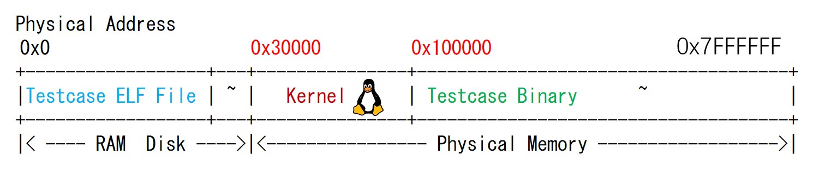
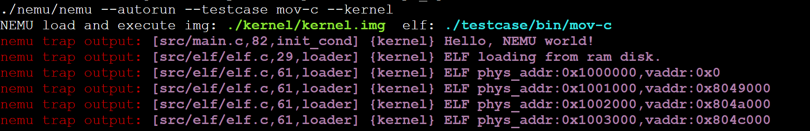
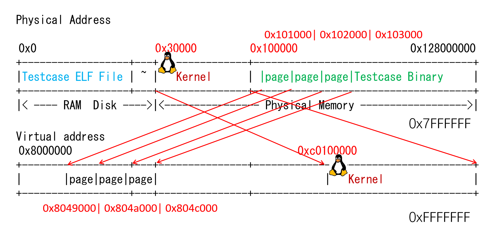

PA 3-3 分页机制——超越容量的界限
在上一节中，我们实现从逻辑地址到线性地址的转换。在实现分页机制之前，线性地址就当做物理地址使用。而自从80386开始，计算机又提供了一种全新的存储管理方式，那就是分页机制。在分页机制下，每一个进程都拥有独立的存储空间。同时，每一个进程独立的存储空间又具有相同的地址划分方式。此时，线性地址就需要通过进一步的转换，才能获得最终要访问的物理地址。

代码实现
分页机制的模拟
-
修改Kernel和testcase中
Makefile的链接选项 -
在
include/config.h头文件中定义宏IA32_PAGE并make clean -
在
CPU_STATE中添加CR3寄存器 -
修改
laddr_read()和laddr_write()，适时调用page_translate()函数进行地址翻译 -
修改Kernel的
loader()，使用mm_malloc来完成对用户进程空间的分配
首先需要处理的是在CPU_STATE中添加CR3寄存器，这需要我们查阅i386手册，与前述CR0一致的，我们可以找到这样的描述
 由此也可以写出
由此也可以写出CR3的结构模拟
PA3-3的一个小提示
在本节的page_translate()函数中，我们发现当#define TLB_ENABLED时，框架代码给出了TLB查询的实现。因此在继续进行PA3-3时，我们可以先设置#define TLB_ENABLED，然后进行laddr_read和laddr_write的实现，最后再取消#define TLB_ENABLED并实现page_translate()函数。
一个需要注意的地方
laddr_read()和laddr_write()的行为也要发生改变：当CR0的PG位被置为1时，需要按照上一小节中所述的方法，查询两级页表，将线性地址转换成物理地址再加以访问。注意在laddr_read()和laddr_write()中要处理地址访问跨越页边界的情形，若发生跨越页边界，则应当将一次读写拆分成两次物理地址读写来进行。
事实上，laddr_read()和laddr_write()的修改在逻辑上并不难，其重点在上述任务描述中已经十分详细。一个参考实现如下
uint32_t laddr_read(laddr_t laddr, size_t len)
{
assert(len == 1 || len == 2 || len == 4);
#ifdef IA32_PAGE
if(cpu.cr0.pg == 1 && cpu.cr0.pe == 1) //当CR0的PG位被置为1时，需要查询两级页表，将线性地址转换成物理地址再访问
{
if(laddr + len - 1 > (laddr | 0xFFF)) //在x86系统中规定每个页面的大小为4KB，若大于，则需要分两次访问
{
paddr_t paddr_low = page_translate(laddr), paddr_high = page_translate((laddr & 0xFFFFF000) + 0x1000);
size_t len_low = (laddr | 0xFFF) - laddr + 1, len_high = len - len_low;
assert(len_high == (laddr + len - 1) - (laddr | 0xFFF));
uint32_t data_low = paddr_read(paddr_low, len_low), data_high = paddr_read(paddr_high, len_high);
uint32_t res = (data_low) | (data_high << (8 * len_low));
return res;
}
else{
paddr_t paddr = page_translate(laddr);
return paddr_read(paddr, len);
}
}
else{
return paddr_read(laddr, len);
}
#else
return paddr_read(laddr, len);
#endif
}
void laddr_write(laddr_t laddr, size_t len, uint32_t data)
{
assert(len == 1 || len == 2 || len == 4);
#ifdef IA32_PAGE
if(cpu.cr0.pg == 1 && cpu.cr0.pe == 1) //当CR0的PG位被置为1时，需要查询两级页表，将线性地址转换成物理地址再访问
{
if(laddr + len - 1 > (laddr | 0xFFF)) //在x86系统中规定每个页面的大小为4KB，若大于，则需要分两次访问
{
paddr_t paddr_low = page_translate(laddr), paddr_high = page_translate((laddr & 0xFFFFF000) + 0x1000);
size_t len_low = (laddr | 0xFFF) - laddr + 1, len_high = len - len_low;
assert(len_high == (laddr + len - 1) - (laddr | 0xFFF));
uint32_t data_low = data & (0xFFFFFFFF >> (8 * len_high)), data_high = data >> (8 * len_low);
paddr_write(paddr_low, len_low, data_low);
paddr_write(paddr_high, len_high, data_high);
}
else{
paddr_t paddr = page_translate(laddr);
paddr_write(paddr, len, data);
}
}
else{
paddr_write(laddr, len, data);
}
#else
paddr_write(laddr, len, data);
#endif
}
一个投机取巧的实现
你不难注意到，这样实现也可以通过所有的测试样例，但是，这并不是一个好的实现。
uint32_t laddr_read(laddr_t laddr, size_t len){
assert(len == 1 || len == 2 || len == 4);
if( cpu.cr0.pg == 1) {
paddr_t paddr = page_translate(laddr);
return paddr_read(paddr, len);
} else return paddr_read(laddr, len);
}
void laddr_write(laddr_t laddr, size_t len, uint32_t data){
assert(len == 1 || len == 2 || len == 4);
if( cpu.cr0.pg == 1) {
paddr_t paddr = page_translate(laddr);
paddr_write(paddr, len, data);
} else paddr_write(laddr, len, data);
}
一个错误的实现
void laddr_write(laddr_t laddr, size_t len, uint32_t data){
assert(len == 1 || len == 2 || len == 4);
if( cpu.cr0.pg == 1) {
if (laddr + len - 1 > (laddr|0xFFF)) {
paddr_t paddr = page_translate(laddr);
paddr_write(paddr, (laddr|0xFFF) - laddr + 1, data & (0xFFFFFFFF >> (8 * (laddr|0xFFF) - laddr + 1)));
paddr = page_translate((laddr|0xFFF) + 1);
paddr_write(paddr, len - (((laddr|0xFFF) - laddr + 1)), data >> (8 * ((laddr|0xFFF) - laddr + 1)));
} else{
paddr_t paddr = page_translate(laddr);
paddr_write(paddr, len, data);
}
}else{
paddr_write(laddr, len, data);
}
}
laddr_write函数的实现中对data的运算出现了一点点失误，导致了诡异的情况。
为什么我在这里给出了我曾经错误的实现
我曾经想，作为一份看起来很正式的学习记录，不应该出现错误或误导。但是，我后来发现，这并不是一个好的学习记录。本记录的写作之初心是记录学习过程，而不是记录学习成果。因此，我决定在错误的地方加上注释，以提醒自己，也提醒后来者。正如我的一个同学说的
那不是黑历史 那是来时路
接下来，我们实现page_translate()函数。事实上，我们可以通过先开启#define TLB_ENABLED，并将自己的实现与TLB的结果通过assert进行比较，从而发现可能存在的问题。
31 22 21 12 11 0
LINEAR +------------+-----------+--------------+
ADDRESS | DIR | PAGE | OFFSET |
+------------+-----------+--------------+
32位线性地址结构
PAGE FRAME
+-----------+-----------+----------+ +---------------+
| DIR | PAGE | OFFSET | | |
+-----+-----+-----+-----+-----+----+ | |
| | | | |
+-------------+ | +------------->| PHYSICAL |
| | | ADDRESS |
| PAGE DIRECTORY | PAGE TABLE | |
| +---------------+ | +---------------+ | |
| | | | | | +---------------+
| | | | |---------------| ^
| | | +-->| PG TBL ENTRY |--------------+
| |---------------| |---------------|
+->| DIR ENTRY |--+ | |
|---------------| | | |
| | | | |
+---------------+ | +---------------+
^ | ^
+-------+ | +---------------+
| CR3 |--------+
+-------+
图3-11线性地址向物理地址转换的过程
paddr_t page_translate(laddr_t laddr)
{
#ifndef TLB_ENABLED
uint32_t high_10_ = (laddr >> 22) & 0x3FF;
uint32_t mid_10_ = (laddr >> 12) & 0x3FF;
uint32_t low_12_ = laddr & 0xFFF;
uint32_t temp_p_PDBE = (cpu.cr3.PDBR) << 12;
uint32_t temp_1 = paddr_read(temp_p_PDBE + (high_10_ << 2), 4);
assert(temp_1 & 0x1);
temp_1 = temp_1 & 0xFFFFF000;
temp_1 = paddr_read(temp_1 + (mid_10_ << 2), 4);
assert(temp_1 & 0x1);
uint32_t temp_paddr = (temp_1 & 0xFFFFF000) | low_12_;
return temp_paddr;
#else
return tlb_read(laddr) | (laddr & PAGE_MASK);
#endif
}
我们直观通过预编译的形式展示Kernel的loader()的变化如下
#ifdef IA32_PAGE
uint32_t paddr = mm_malloc(ph->p_vaddr, ph->p_memsz);
#else
uint32_t paddr = ph->p_vaddr;
#endif
在完成上述实现后，确保开启#define IA32_PAGE以及关闭#define TLB_ENABLED并在工程目录下运行make test_pa-3-3，观察到如下结果：

这标志我们顺利通过了PA3-3的代码模拟部分。
思考习题
PA3-3-1
Kernel的虚拟页和物理页的映射关系是什么？请画图说明；
在32位x86系统中，Kernel会将自己的一部分内存映射到所有进程的虚拟地址空间的0xc0030000及以上。这点在“将输入的虚拟地址减去KOFFSET=0xc0000000，从而转换成物理地址。”有体现  从0x30000开始的Kernel对应了0xc0030000开始的虚拟地址，相应的Kernel的虚拟页和物理页也是一个位于0x30000-0x100000，一个位于0xc0030000-0xc0100000，一个大致的映射如下：
| \
| \
| \
+----------------------------------------------+
| | | |
| | 页表 | 页 |
| | | |
+----------------------------------------------+
Kernel
物理地址0x30000
虚拟地址0xc0030000
PA3-3-2
以某一个测试用例为例，画图说明用户进程的虚拟页和物理页间映射关系又是怎样的？Kernel映射为哪一段？你可以在loader()中通过Log()输出mm_malloc的结果来查看映射关系，并结合init_mm()中的代码绘出内核映射关系。
在加载器(loader())为该测试用例创建页表时，它会根据程序头中的信息分配物理内存，并建立相应的页表条目，以确保虚拟地址能够正确地映射到物理地址。在kernel/src/elf/elf.c对源代码添加log后以其中一个测试用例为例可以得到以下输出（观察所有的测试样例也可以发现类似的输出）  据此，我们可以画出如下的映射关系： 
PA3-3-3
“在Kernel完成页表初始化前，程序无法访问全局变量”这一表述是否正确？在init_page()里面我们对全局变量进行了怎样的处理？
在本次PA完成以后，即PE = 1 且PG = 1时，“在Kernel完成页表初始化前，程序无法访问全局变量”这一表述是正确的。在页表初始化之前，线性地址还不能被转换成物理地址，因此直接访问位于某些特定的物理地址上的全局变量是不可能的。 init_page()函数建立了正确的页表条目，使全局变量的虚拟地址可以正确地映射到它们对应的物理地址。
PA-3-3阶段结束
时光过得着实太快。 ——村上春树《且听风吟》